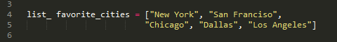
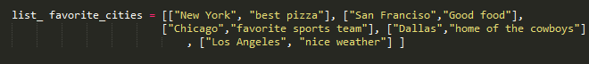
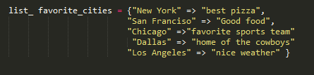

Week 3 Phase 0
Arrays vs Hashes
10/26/2014
This week in DBC we learned how to create Arrays and Hashes in Ruby. Knowing how create and use arrays and hashed are very important. However, I’m not interested in show that stuff. What I am interested in is share with you when to use Arrays and Hashes. If you want to learn how to create Arrays and Hashes I’ll have couple links to few my cohorts blog post that feel really explain that well.
Array
The first thing you have know about an array is that it store it’s element in order. Array use indexes that start at 0 and go on from there. This is important because this limits that type of data that you want to store in an array. Arrays best used when listing data that you want to be order. List of data like recipes, directions, agendas, and calendars are good thing to put in an array. These list all need there elements to be in order to be used and that’s where array shine. However, what array are not good will unordered elements. The reason why array don’t those thing well because array are not really easy to searching.
For example, let’s take look at the array favorite cities below.
What do we know about these favorite cities from this array? Well nothing really but I can change that.
Now we have array of arrays that list the city and why they it’s a favorite city. So, now what do we do when we want to know why Chicago is a favorite. You’re probably saying that’s easy just print element 1 of the element 2 in list_favorite_cities. But, what if we didn’t know where to find it. Better yet what if there were a hundreds cities in this array and we wanted to access any given one. Well, that becomes a problem for arrays. But, we are in luck there is a better way.
Hashes
Hashes are also used to list data. But, unlike arrays hashes use keys value pairing to store data. So, the order the data is put in the hashes doesn’t matter because we are no longer accessing the by using an index number. We now using key that we set to access the data or value we want. So, list from earlier will now look like this.
Hashes makes accessing data easier because now you get have to search for the key to get the data you desire. This makes hashes useful for user accounts list, appendices, and other searchable data. One thing to note hashes easy to maintain because there is no order that you following.
That’s it for now until time.